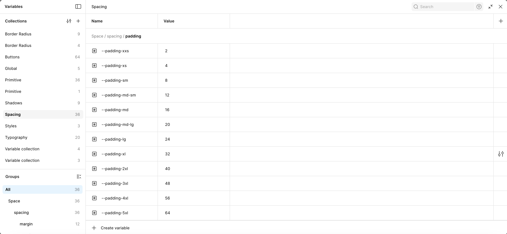

Design Systems • 2025
A Ground-Up Redesign Of Our
Design System




After reviewing more than 100 components, we found that our design system had gotten messy. There were multiple libraries, inconsistent documentation, and differences between what was in Figma and what was live on the site.
We needed uniformity, consistency, and a scalable foundation.
*Disclaimer: I won't disclose exact performance data to comply with my NDA.
To benchmark our fragmented design system library, We studied established systems like (Material Design, Carbon, Atlassian, and Dell System) to understand what makes a system robust.
The best systems had three things in common:
To scale, we needed a new methodology. We adopted a token-first approach, naming and organizing variables semantically rather than by raw values.
Due to security constraints, we couldn't use third-party plugins for token management. That meant:
We manually built our design tokens, creating our own naming guides. While time-consuming, it gave us full control.
We went through multiple iterations of our variable structure, naming systems, and how components referenced them. Once we had a working model, we began pitching the new approach:

(Automated switching via Variables)
To drive adoption, we focused on communication:
Shortly after socializing, leaders asked us to update ALL components. With our work implemented, updating the entire library took us about 10 mins.
We proposed collapsing our three independent libraries into a unified, connected system: